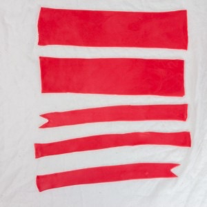
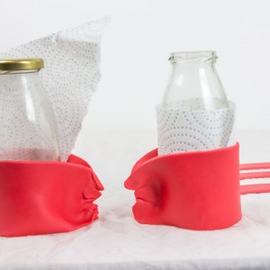
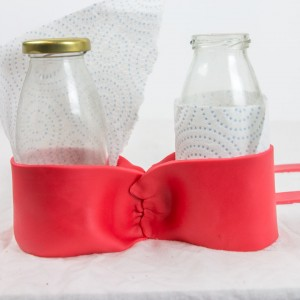
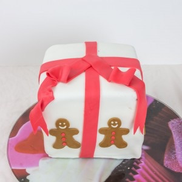
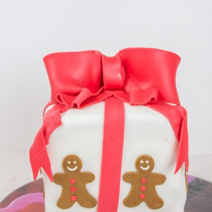

Gâteau de Noël comme un paquet cadeau

Dans un mois ce sera Noël :). Je ne sais pas vous mais moi je suis dingue de cette période. Les odeurs, la bonne humeur, le froid, les chocolats, les décorations, toutes ces lumières et tous ces chants de Noël… Aujourd’hui me voilà donc avec un gâteau de Noël en pâte à sucre qui j’espère vous inspirera pour le jour J.
Il y a un an jour pour jour, pour ceux qui s’en souviennent, je publiais ma recette de gâteau de Noël (ici) et je tenais tout particulièrement (je ne sais pas pourquoi) à publier ma nouvelle recette de gâteau de Noël à cette même date un an plus tard sauf que cette année il s’agit d’un gâteau recouvert de pâte à sucre (je suis loin d’être une pro alors si j’y arrive vous aussi vous y arriverez ce n’est pas bien compliqué).
Comme chaque année, j’avais vraiment envie de faire quelque chose qui retransmette cette belle période et l’univers magique de Noël alors quoi de mieux qu’un gâteau en forme de paquet cadeau! Pour les génoises, j’ai repris celles de mon pinata cake (ici) car j’en suis tombée amoureuse (elles sont vraiment très très moelleuses) et j’y ai ajouté des épices et des zestes d’oranges (parfait pour un gâteau de Noël) et je vous laisse imaginer l’odeur émanant du four. Je n’aime pas trop les gâteaux alcoolisés mais si vous ça vous parle sachez que vous pouvez remplacer la vanille par du cointreau, vous ne serez pas déçus! Pour en revenir aux génoises, vous verrez que dans la recette je n’utilise que les blancs d’œufs que je me contente de battre et c’est NORMAL alors ne soyez pas étonnés! En fin de cuisson le gâteau est plutôt mou alors pour vous assurer de la cuisson, plantez la lame d’un couteau et si elle ressort sèche alors c’est que c’est cuit!
Pour en revenir à mon gâteau de Noël, et notamment au fait qu’il soit recouvert de pâte à sucre, sachez que ce n’est pas bien compliqué et que l’important dans ce genre de gâteau c’est l’émerveillement qu’il peut susciter (et la pâte à sucre est là pour ça). Après la pâte à sucre on la mange ou on ne la mange pas ça c’est chacun qui voit! L’essentiel est que l’intérieur soit bon!!
Je vous laisse maintenant avec la recette de ce gâteau de Noël (que je vous conseille de bien lire avant de commencer pour bien vous organiser).
Enregistrer
Ingrédients
- Farine - 500g
- Sucre - 560g
- Beurre à température ambiante - 225g
- Lait - 480ml
- Jus de citron - 7ml = 1càc et demi
- Blanc d'oeuf à temp ambiante - 9
- Levure chimique - 15g
- Sel - 1 càc
- Extrait de vanille ou cointreau - 2 càc
- Mélange d'épices pour pain d'épice - 4 càc
- Zeste d'orange - zestes d'une grosse orange
- Cream cheese (philadelphia, St Moret etc..) - 320g
- Mascarpone - 320g
- Crème liquide entière - 20cl
- Extrait de vanille - 1 càc
- Sucre glace - 120g
- Pâte à sucre blanche - 1kg500
- Pâte à sucre rouge
- Pâte à sucre marron claire
- Emporte-pièce bonhomme pain d'épice
- Petit pinceau
- Petit bol d'eau
Instructions
- Préchauffer le four à 180°C.
- Dans le bol de votre robot à l'aide de la feuille, verser la farine tamisée, la levure et le sel
- Mélanger
- Verser le sucre et les épices pour pain d'épices
- A basse vitesse, ajouter petit à petit le beurre mou coupé en morceaux
- Battre jusqu’à ce que la totalité du beurre soit bien incorporé ( environ 3 minutes)
- Le mélange obtenu est très friable comparable à une pâte à crumble
- Dans un verre doseur mélanger la moitié du lait, l’extrait de vanille (ou cointreau), le jus de citron et les zestes d'orange
- Dans un autre bol mélanger le reste de lait avec les BLANCS d’œufs (mélanger avec une fourchette ou un fouet manuel) (Oui vous avez bien lu il ne faut pas monter les blancs)
- Augmenter la vitesse de votre robot et ajouter progressivement le mélange lait//extrait de vanille//citron
- Réduire la vitesse de votre robot et ajouter le deuxième mélange contenant le lait et les blancs d’œufs
- Battre pendant 3 bonnes minutes pour le mélange soit bien homogène
- Racler les bords de la cuve avec une spatule s’il y en a sur les rebords
- Bien beurrer et fariner votre moule (au fond du moule ajouter un papier sulfurisé)
- Peser la pâte et versez-la dans 4 moules de 18 cm (bien beurrés !!) ou si vous n'en avez qu'un faites cuire les gâteaux un par un 😉
- Enfourner pendant 30 minutes dans le four préchauffé
- Les laisser totalement refroidir sur une grille
- Quand elles sont froides préparer le glaçage
- 30 min avant de commencer: pensez à placer au congélateur la crème liquide et les fouets de votre batteur ainsi que le bol de votre robot (ou le saladier que vous allez utiliser pour monter votre crème) afin de vous assurer d'avoir une belle chantilly du premier coup!
- Dans un récipient assouplir le cream cheese (philadelphia pour moi) et le mascarpone avec l'extrait de vanille. Réserver
- Monter la crème en chantilly
- Quand la crème commence à monter, ajouter petit à petit le sucre glace
- Incorporer délicatement le mélange cream cheese-mascarpone à la crème
- Continuer de battre. Il faut obtenir un mélange bien homogène
- Le mélange doit monter à vue d’œil et la crème ne doit pas retomber
- Réserver au frais si vous ne glacez pas votre gâteau immédiatement
- Pour plus de facilité pour le service, le transport... découper un morceau de carton de la taille de vos génoises
- Déposer une noix de glaçage sur le carton pour y faire adhérer la première génoise
- Couvrir le dessus de la première génoise de glaçage et ajuster la deuxième génoise par dessus
- Continuer ainsi de suite
- Une fois toutes les génoises superposées, recouvrir le gâteau d'une couche de crème
- Laisser refroidir au frigidaire
- Sur une surface propre et lisse (moi j'utilise un tapis à pâtisserie mais une table ou votre plan de travail est parfait aussi), saupoudrer d'un peu de sucre glace (ça évite que la pâte adhère à la surface)
- Malaxer la pâte à sucre entre vos mains pour la ramollir
- Étaler la pâte à sucre de manière à ce qu'elle puisse recouvrir parfaitement votre gâteau (voyez plus large pour les bords) Personnellement, je l'étale sur environ 2mm d'épaisseur mais libre à vous de laisser l'épaisseur de votre choix Utiliser un rouleau à pâtisserie en polyéthylène ou en silicone mais surtout pas en bois!
- Enrouler la pâte à sucre autour du rouleau
- La dérouler avec le plus grand soin au dessus du gâteau
- Lisser bien les bords avec vos mains pour éviter les pliures (ou avec un lisseur si vous êtes équipés)
- Découper les bords qui dépassent
- Couper deux bandes dans de la pâte à sucre rouge de la taille du gâteau
- Placez les autour du cadeau de manière à ce que ça ressemble à un paquet cadeau
- Former le nœud comme sur les photos suivantes: (pour faire adhérer la pâte à sucre au gâteau utiliser un petit pinceau avec un peu d'eau)
- A l'aide d'emporte-pièce en forme de bonhomme en pain d'épice former vos bonhommes dans de la pâte à sucre marron (la mienne avait goût de spéculoos)
- Pour les coller utiliser un petit pinceau avec un peu d'eau et ça tient tout seul!!
- Le gâteau est prêt il n'y a plus qu'à le déguster 🙂





Les tips de la communauté
Gâteau magnifique et original qui impressionne par sa décoration pâte à sucre. Nombreux retours admiratifs sur la beauté, bien que technique demande du temps et patience.
Astuces
- La pâte à sucre n'est pas compliquée à travailler
- Les petits personnages en gingerbread décoratifs ajoutent du charme
- Design paquet cadeau est original et apprécié
- Bien dimensionné pour 10 personnes avec 4 génoises
Variantes suggérées
- moule carré je peux utiliser un moule en silicone rond ? Bonne journee Bisous
Ajustements signalés
- Moule carré possible mais un moule rond peut aussi fonctionner selon certains lecteurs